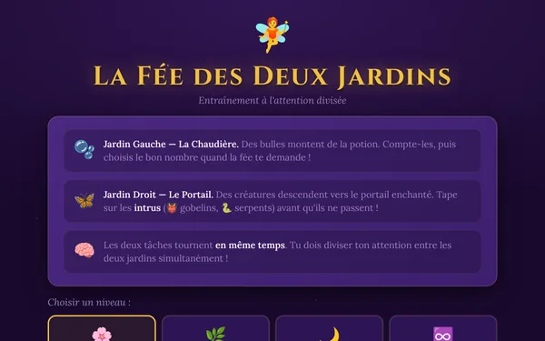
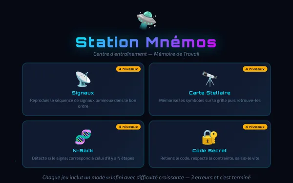
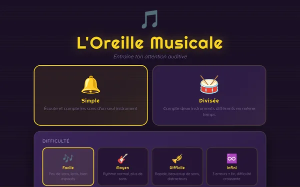
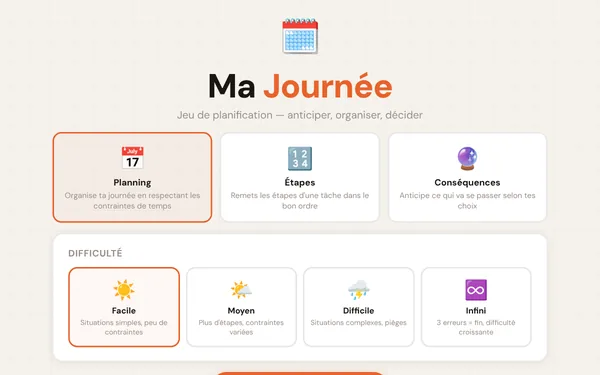
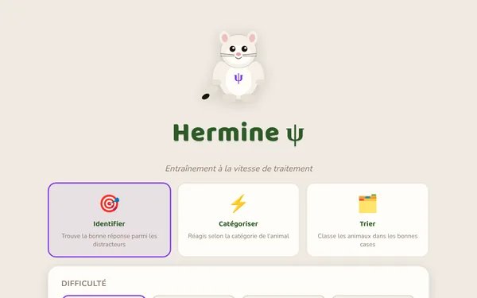

Les jeux cognitifs NeuroBreizh
Sept jeux conçus au cabinet, chacun centré sur une fonction. Ils s’utilisent en séance et à la maison, dans le cadre de la remédiation et du suivi.
Les sept jeux
 Inhibition
InhibitionRéflexes & Contrôle
Appuyer dès que la cible verte apparaît, se retenir devant la rouge. Trois niveaux, de plus en plus rapides.
Inspiré du paradigme Go/No-Go.

Attention diviséeLa Fée des Deux Jardins
Compter les bulles d’un jardin tout en arrêtant les intrus de l’autre : deux tâches à mener en même temps.
Inspiré des paradigmes de double tâche.

Mémoire de travailStation Mnémos
Quatre épreuves : reproduire une séquence, retrouver des symboles, repérer une répétition à N étapes, retenir un code.
Inspiré des empans, du N-back et des tâches de mise à jour.
 Flexibilité cognitive
Flexibilité cognitiveLe Donjon des Règles
Traverser un labyrinthe dont les règles de déplacement changent en cours de route.
Inspiré des tâches de changement de règle.

Attention auditiveL’Oreille Musicale
Compter les sons d’un instrument, puis de deux instruments qui jouent en alternance.
Inspiré des tâches de comptage auditif.

PlanificationMa Journée
Organiser une journée sous contraintes, remettre des étapes dans l’ordre, anticiper les conséquences de ses choix.
Inspiré des tâches de planification et de séquençage.

Vitesse de traitementHermine ψ
Identifier, classer et trier des animaux le plus vite possible, au milieu de distracteurs.
Inspiré des tâches de vitesse de traitement.
Bon à savoir
- Ce sont des outils d’entraînement, pas des tests. Les scores ne sont pas comparés à des normes et ne permettent pas de poser un diagnostic.
- Commencez par le niveau le plus facile. Chaque jeu propose plusieurs niveaux de difficulté ; la plupart ont aussi un mode infini qui s’arrête après quelques erreurs.
- Vos parties sont enregistrées sur votre appareil, et nulle part ailleurs. Elles alimentent la page Mon suivi : régularité, minutes par semaine et courbes de progression. Rien n’est envoyé sur Internet.
- Sur ordinateur ou tablette. Certains jeux se jouent aussi au clavier.
- Dans le cadre du suivi, le programme de jeux est choisi avec vous, selon le profil et les objectifs.
Un premier échange pour savoir si un bilan est utile
Vous hésitez, ou vous ne savez pas par où commencer ? Contactez le cabinet pour en parler avant de vous engager.